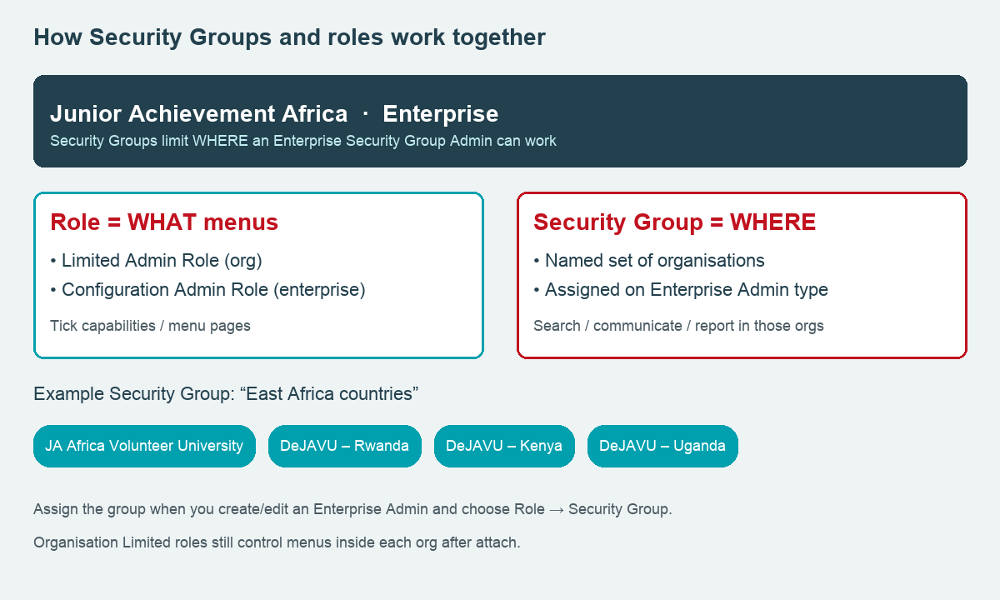

Admin guide
Audience · AdministratorAdministrator Roles & Security Groups
Create roles, tick the permissions (capabilities) each role can use, assign those roles to administrators, and use Security Groups when an enterprise admin should only see some organisations. Pair this with Creating Administrators when you need contact details and sample accounts.
Path: People → Administrators (on Junior Achievement Africa, then switch into an org as needed) · Docs: BI administrator profiles · Administrator Profiles collection
Roles vs Security Groups (what vs where)
Keep these two tools separate. Mixing them up is the usual reason someone “has the wrong access.”
Role — which menus and features they can open. Organisation Limited Admin Roles and Enterprise Configuration Admin Roles are checklists of capabilities.
Security Group — which organisations an Enterprise Security Group Admin can see and work across (search, communicate, report). It does not replace a Limited role inside an org.

Limited / Module / No System Access exist only inside an organisation. Security Groups and Configuration Admin Roles exist only at enterprise.
Open the Administrators menus
Sign in to the Junior Achievement Africa enterprise. Go to People → Administrators.
You should see:
Security Groups — named sets of organisations for enterprise admins.
Organisation Limited Admin Roles — shared Limited roles for every sub-account.
Enterprise Configuration Admin Roles — enterprise configuration checklists.
Enterprise Administrators — people with enterprise-level access.
Organisation Administrators — attach people to sub-accounts and set their org role.
 Security Groups
Limited + Config roles
Security Groups
Limited + Config roles
Inside JA Africa Volunteer University the list is simpler: Add an Admin, Manage Administrators, and Limited Admin Roles (local roles only).
Create an Organisation Limited Admin Role
Use a Limited role when someone should only see some menus inside an organisation (for example Reporting Admin or Hours Reviewer).
Path (shared for all orgs): People → Administrators → Organisation Limited Admin Roles → + New Organisation Limited Admin Role.
 Existing JA Africa roles
New Organisation Limited Admin Role
Existing JA Africa roles
New Organisation Limited Admin Role
On the new-role form:
1. Enter a clear Role name and optional description.
2. Tick the Module(s) (usually Volunteer; add Administrator if they need admin profiles).
3. Tick the Capabilities (menu pages) they may use. Use Show All / Select All, then untick what they must not have.
4. Click Save.
JA Africa already has Country Admin, Recruitment Admin / Safeguarding Reviewer, Reporting Admin, Communications, and Super Admin on this list. A Limited admin can hold only one Limited role at a time. Roles created here are available in every sub-account; roles created inside one org (People → Limited Admin Roles while switched into that org) stay local.
Create an Enterprise Configuration Admin Role (permissions)
Use this when an enterprise person should only change selected configuration (branding, news, qualifications, surveys, and so on) — not Full Enterprise access.
Path: People → Administrators → Enterprise Configuration Admin Roles → + New Enterprise Configuration Admin Role.
New Enterprise Configuration Admin Role
Fill the form. The sample below is DeJAVU Guide – Branding & News — Volunteer module, narrow configuration permissions only.
 Role name
Modules
Capabilities (permissions)
Role name
Modules
Capabilities (permissions)
Tick only the configuration capabilities that person needs. Click ? beside an option in Better Impact for a short description. Save, then confirm the role appears in the list.
 Saved role
Saved role
Full Enterprise Admins do not need a Configuration Admin Role — they already have every enterprise menu. Think of Configuration Admin Roles as the enterprise equivalent of Limited Admin Roles.
Create a Security Group
A Security Group is a named list of organisations (often a region or programme cluster). You assign it to an enterprise admin whose type is Security Group so they only see those orgs at enterprise.
Path: People → Administrators → Security Groups → + New Security Group (or the + in the Security Group header).
Security Groups
On the new Security Group form:
1. Enter a Security Group name (max 100 characters), for example East Africa countries.
2. Select the Module(s) that will use the group.
3. Tick the Organisation(s) that belong in the group (for example JA Africa Volunteer University plus country DeJAVU accounts).
4. Set email / note-log visibility options if shown, then Save.
From the Security Groups list you can Options → View / Edit, Options → View Administrators in the group, or Delete (only if no administrators are still assigned to it).
What Security Group Admins can do: search, communicate, and report across the organisations in their group. They cannot manage enterprise configuration, settings, or organisation-level data from the enterprise account. For day-to-day org menus they still need an organisation role after you attach them (steps 8–9).
Assign a role when creating an Enterprise Administrator
Path: People → Administrators → Enterprise Administrators → + Create Enterprise Administrator (or Options → edit an existing row).
Under Role choose one of:
Full Administrator — every enterprise feature (platform owners).
Security Group — then pick the Security Group from step 5 (controls where).
Configuration Admin — then pick a Configuration Admin Role from step 4 (controls what).
 Type shows assigned role
Create Enterprise Administrator
Type shows assigned role
Create Enterprise Administrator
You can also + Promote Account Administrator to lift an existing org admin to enterprise. Better Impact does not email the new password — share login details yourself.
When to use a Security Group (worked example)
Example: A regional coordinator should search and report only for Rwanda and Volunteer University, not every DeJAVU country account.
1. Create Security Group East Africa pilot with those organisations (step 5).
2. Create or edit the enterprise admin → Role = Security Group → select East Africa pilot (step 6).
3. If they also need menus inside Volunteer University (hours, applicants, and so on), attach them as an organisation admin with a Limited or Full role (steps 8–9).
Configuration Admin and Security Group solve different problems. One person is either Full, Security Group, or Configuration Admin at enterprise — pick the type that matches the job, then attach org roles when they need sub-account menus.
Attach an enterprise person to organisations and assign an org role
An enterprise-only profile cannot open Volunteer University menus until you attach them and set an organisation type + role.
Path: People → Organisation Administrators → search by username → Options → Manage … access.
 Search username
Search username
 Tick organisations
Tick organisations
Tick the organisations, choose Add or Update Admin Role, set Type (Full, Limited, Module, or No System Access) and Role (if Limited), then Save.
 Type and role
Type and role
 Active on orgs
Active on orgs
Assign a Limited role to an Organisation Administrator
Switch into the organisation (Phase 1: JA Africa Volunteer University). Path: People → Administrators → Add an Admin (or Manage Administrators → Options → Update Administrator Role).
 Add an Admin
Limited Admin Roles
Add an Admin
Limited Admin Roles
Complete contact details, then under Settings → Administrator Role choose Type = Limited and pick the role (for example Country Admin or the guide sample Hours Reviewer). Adjust notification checkboxes, then Save.
 Contact details
Contact details
 Type + Role
Type + Role
 Assigned admins
Assigned admins
You can also promote a volunteer: open their profile → Main → Miscellaneous → Administrator → set Active, then Update Administrator Role. Always send them the admin login URL separately.
Quick chooser — which tool to use
Country staff with limited menus — Organisation Limited role (step 3) → assign on org admin (step 9).
Country staff who need every menu — Organisation Type = Full (step 9).
Regional owner of the whole platform — Enterprise Full Administrator (step 6).
Regional staff for some countries only — Security Group (steps 5–7) ± org Limited/Full attach (steps 8–9).
Someone who only maintains configuration — Configuration Admin Role (step 4) + enterprise type Configuration Admin (step 6).
After you change a role’s capabilities, every admin who holds that role gets the new permissions. Review live roles carefully before editing Country Admin or Super Admin.